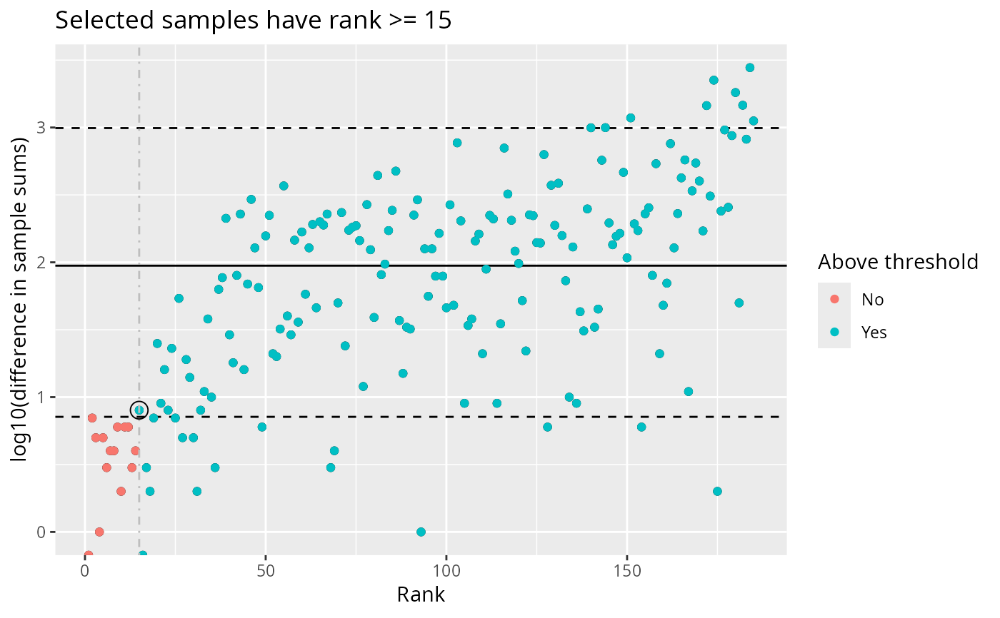
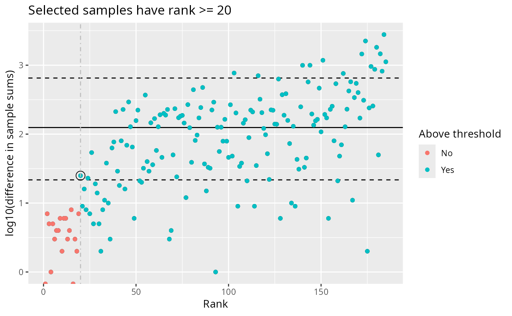
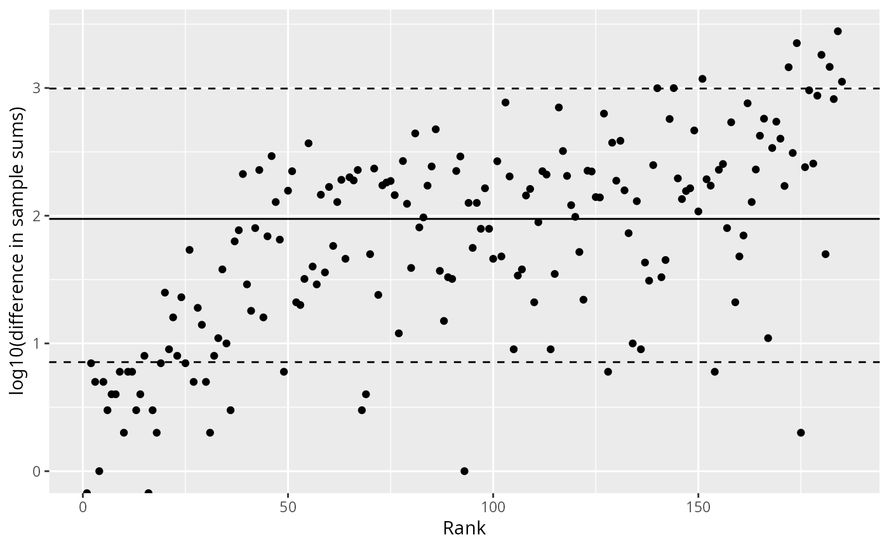

Creates a diagnostic plot showing the log10 differences between consecutive sorted sample sums. This helps identify samples with unusually low sequencing depth by detecting large "jumps" in the distribution.
Usage
plot_sample_depth_pq(
physeq,
lower_quantile = 0.1,
threshold_quantile = 0.05,
show_threshold = TRUE
)Arguments
- physeq
(phyloseq, required) A phyloseq object.
- lower_quantile
(numeric, default: 0.1) Lower quantile threshold to exclude smallest differences when computing statistics.
- threshold_quantile
(numeric, default: 0.05) Quantile used to define the threshold for detecting large jumps.
- show_threshold
(logical, default: TRUE) Whether to color points based on the computed threshold and show the threshold rank in the title.
Value
A ggplot object showing:
Points representing log10(difference) vs rank
Solid horizontal line at the mean log10(difference)
Dashed horizontal lines at the 5th and 95th percentiles
If
show_threshold = TRUE, points colored by whether they pass the threshold
Details
The function sorts samples by their total read count (sample sums), then computes the difference between each consecutive pair. Large differences indicate potential outlier samples with unusually low depth.
The threshold is computed as the threshold_quantile of differences,
excluding the smallest lower_quantile of differences to avoid noise.
Samples with rank >= the first sample exceeding this threshold are
considered to have sufficient depth.
Examples
library(MiscMetabar)
data(data_fungi)
# Basic plot
plot_sample_depth_pq(data_fungi)

# Adjust thresholds
plot_sample_depth_pq(data_fungi, lower_quantile = 0.2, threshold_quantile = 0.1)

# Without threshold coloring
plot_sample_depth_pq(data_fungi, show_threshold = FALSE)
